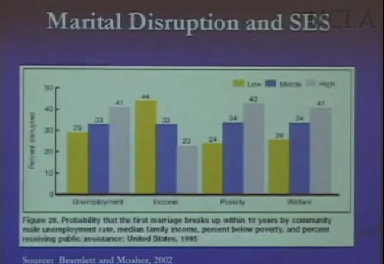
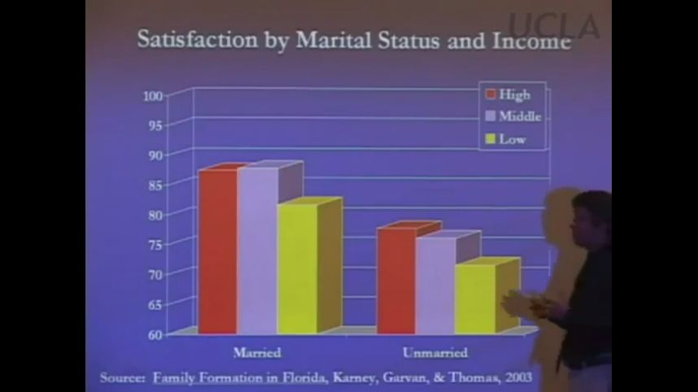

这周又继续听了几节UCLA的家庭与夫妇心理课（网易公开课上有中文翻译版），继续分享。
越是贫穷，离婚率越高
课程上展示了一组1995年美国离婚率的数据。如果我们把所有人按照收入分为三组，贫困线收入两倍以下的为低收入人群，两倍到四倍之间的为中等收入人群，四倍以上的为高收入人群，则我们可以把人群分为高收入，中等收入，低收入三个人群。
数据显示，高收入人群结婚后10年内有23%的人离婚，中等收入的数字是33%，低收入的则为44%。也就是说低收入人群10年内的离婚率是高收入人群的几乎两倍。

低收入人群的离婚率不仅仅会更高，他们的关系质量也要比高收入人群更差。课程上展示的另外一组数据显示，高收入已婚人士中，有87%的人表示自己生活幸福，而低收入已婚人群仅有82%的人表示自己生活幸福。可见钱还是可以让人更快乐的。
当然了，重申一下我上周文章的观点，婚姻其实可以让人更快乐。在高收入的未婚人士中，有77%的人表示自己生活幸福，而低收入未婚人群仅有72%表示自己生活幸福，而低收入已婚人群有82%表示自己生活幸福。结婚与否相比起收入的高低对于生活幸福的影响居然高出了一倍（没钱到有钱提升5%，未婚到已婚提升10%），是让人非常吃惊的。

穷人的离婚率为什么这么高呢？
那么到底为什么低收入人群的离婚率要比高收入人群高这么多呢？我们知道大部分低收入的工作的工作时间都卡得很死，比如需要打卡，很难请假等等。而且低收入工作往往需要倒夜班，甚至有的人因为一份工作不够养活自己，需要打两份甚至三份工。这直接导致了低收入人群的闲暇时间显著减少，从而导致他们与另一半的交流时间减少。Karney教授指出，正是低收入人群缺乏时间导致了他们的离婚率更高。
根据Karney教授的研究显示，闲暇时间越少的夫妇离婚率越高。如果夫妻双方的女方上夜班，家庭的离婚危险指数会乘以3，而如果夫妻双方的男方上夜班，家庭的离婚危险指数会乘以6。
正是由于缺乏闲暇时间，工作时间不灵活，工作生活压力偏大导致了夫妻双方难以抽出足够的时间精力去沟通，从而导致了离婚率的居高不下。
穷人的婚姻观有问题吗？
美国政府曾经有过一种猜想。他们觉得低收入的人群之所以离婚率高那么多，是因为他们对于婚姻的观念不够正面。所以他们花了很多钱给低收入人群开课，教育他们婚姻的好处，希望借此可以让他们的离婚率变低。（政府之所以希望离婚率变低，不是因为公益，而是因为离婚会导致离婚双方的生产力降低，导致税收下降）。
Karney教授为了验证美国政府的这个做法的有效性做了一项研究。他用问卷调查了美国很多地区的各种家庭对于婚姻的看法。
他的问题1是：你是否认为一个开心的，健康的婚姻是人生中最重要的事情之一呢？
问卷结果显示，各个人群在这个问题上的意见分歧很小，9分满分的情况下，分差仅有0.06分。这说明低收入人群对于婚姻的重视程度与高收入人群差不多。
问题2是：对于一个失败的婚姻来说，离婚是一个不错的选择吗？
之所以问这个问题，是因为Karney教授猜测，是不是低收入人群对于离婚的接受度更高导致了他们离婚率更高呢？
结果显示，反而是高收入人群对于离婚的接受度最高，比起低收入人群高了0.1分。
问题3是：你是否认同婚前性行为呢？
我们知道，在美国，低收入人群的婚前怀孕率是最高的。然而根据问卷显示，反而是高收入人群对于婚前性行为的接受度最高，比低收入人群高了0.53分。这很好地说明了人们认同什么不代表人们就会去做什么。
总之，根据他的研究显示，低收入人群的婚姻观念相对于高收入人群来说更加趋于保守，他们对于婚姻的重视程度相比起高收入人群来说有过之而无不及。因此美国政府希望借改变他们的婚姻观来降低离婚率的举措无疑是无效的。
穷人和富人对另一半的要求有何不同？
有趣的是，Karney教授还问了人们这样一个问题：你认为一段成功的婚姻中，哪些事情是非常重要的，哪些事情比较重要，哪些事情不那么重要呢？他给了人们很多事情，让大家选择他们认为的重要程度。
从问卷中他发现，相对于中高收入人群，低收入的人群明显倾向于以下这些不那么重要：
有相同的价值观和信仰
有好的性生活
在困难时期互相支持
了解对方的希望与梦想
具有有效沟通的能力
中高收入人群则倾向于认为以下这些不那么重要（也就是低收入人群相对更看重以下这些）：
有相同的种族
配偶的工作稳定
有很多存款
我们会发现中国社会也有类似的演变，从之前找对象的时候更多地看钱，慢慢地变成没有那么看钱，而是看更多其它的东西，比如价值观的匹配等等。这说明中国社会的经济发展确确实实改善了很多人的生活状况。
而中高收入相对认为更加重要的这些方面，在课程的前半段已经解释过，对于婚姻的稳定与幸福非常重要。相对来说低收入人群相对看重的东西对于婚姻倒是没有那么重要。
什么是降低离婚率的有效方法呢？
Karney教授提到，在挪威有一项政策确确实实地降低了整个国家的离婚率。挪威在2002年出台了一项政策，为每个新生儿的家庭提供一段时间的育儿服务。自从政策实行开始，挪威的离婚率就节节下降。这再次印证了他的观点，即提供夫妻闲暇时间是为他们降低离婚率的有效方法。
当然了这种措施对于大一点的国家，比如美国或者中国是不太现实的，因为成本太高了。那么我们自己有什么采取的措施呢？
Karney教授表示，我们自己能做到的最有效的措施，就是要尤为关注焦虑的情绪以及其源头。
夫妻闲暇时间的意义在于，他们可以利用这段时间互相沟通，缓解互相之间的压力。如果压力过多地累积，往往就会让冲突升级，进而导致婚姻的破裂。
而当生活中的压力比较大的时候，沟通的时间往往会需要更多。尤其是当一方的压力很大的时候，往往会导致另外一方的压力也变大，从而使得沟通难以继续。如果夫妻在沟通的时候，可以更多地注意到对方压力的源头，从而不被对方的坏情绪所影响，往往可以改善沟通的效果。
举个例子：如果你的配偶今天回家，莫名其妙大发雷霆，你的心情一定也会很糟。但是如果你知道你的配偶之所以大发雷霆，是因为一个特定的原因，比如回家前踩到鸟屎了，那你就会更能理解这种心情，从而更加容易原谅对方，至少完全不会被对方的大发雷霆搞郁闷了。如果我们能更加细致地去理解对方压力的源头，就能够提升沟通的效果，更好地弥补日常闲暇时间的不足。